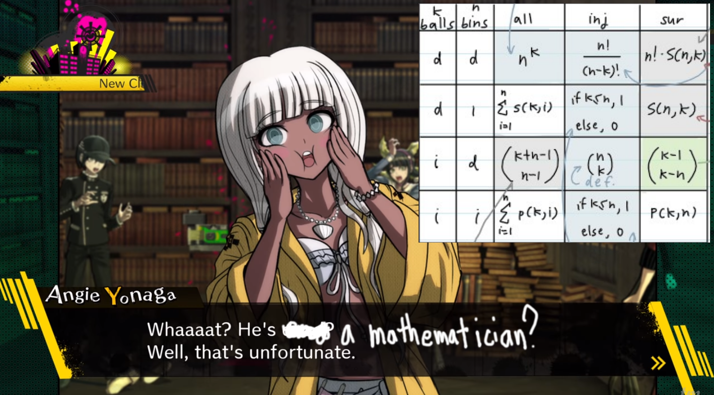

Personal
Plans for 2019
December 21, 2018
There are a couples things I want to focus on. In no particular order, Japanese (studies and old school music), stoicism, music composition, game development, blogging, and 3D modeling. Stoicism is my combinatorics professor's guiding philosophy. I want to be like him so I'll try and follow suit. If I'm going to have an honest conversation with my self, I'd start by saying that I'm reaching for too many things at once. I can study all of them, but I need to specialize in one of them. I think I'm going to focus on game development for now. My current plan for the future is to get whatever job I can while working on my dream as an indie game developer. I want to make a game that cater to my problems. A YouTube artist that I watch by the name of PlagueOfGripes always says that we should enjoy creating art. He says that we should hone in on the things we enjoy and create them. The idea is to get those feelings across to others who also enjoy the same thing.
So the actual plan is... I'm going to focus on learning RPGMaker and Unity. I'm going to start by making games to learn the engines. I'm going to use the things I learned at university as a well for inspiration. Meanwhile I'll be studying Japanese, stoicism, music composition, and 3D modeling. Actually... Hmm, maybe I should use those topics as inspiration as well. Like, turn the process of game development into review sessions for the things I'm studying. So my problem of taking too many things on at once is still there. The things I'm studying require a lot of "lab" time where I need to play with things. Japanese, blogging, and Stoicism can be done daily for like an hour each. Music composition, 3D modeling, and game development require a lot more time. So, I guess I can do game development 3 days a week and the other 2 will be 2 times a week. (This is only until school starts up again). Once school starts again for the last time (I should be graduating Spring 2019), I can do a rotation of the 3 topics while on the train to and from university. Now, another honesty check. Do I really think I can keep such a schedule? The answer is maybe. It isn't a solid yes because I know how easy it is to plan, reach a wall, and then completely crumble. I don't want to be as I am. I don't like the type of people in the communities I am currently a part of. It's a bit scary, but I'm going to try to change. My combinatorics professor wrote out this really long letter to us that states his thoughts on learning and what it means to grow as a person. With that as my guiding light, I'm going to slowly work towards becoming the best version of me possible.
The End of a Semester
December 21, 2018
This post will be one of 2 posts. I have decided to start titling posts. This post will just be a very unorganized reflection of the semester I jsut finished. The next post will be my thoughts for the future. This semester was the hardest semester of my life. I'd feel very proud if I managed to pass all my classes. The grades won't be posted until tomorrow, so I'm trying my best to patient. The classes I took this semester were, Intro to Computer Graphics, Ordinary Differential Equations and Dynamical Systems (DiffEq as my professor called it), Intro to Combinatorics, Engineering Reports, and a geology class. The start of this semester was incredibly difficult due to the amount of things I had to review or just uptake in a short amount of time. Intro to computer graphics required me to translate my knowledge of java to C++, diffEq required me to review calculus (which I haven't used in a year), and combinatorics required me to review discrete math. It was a wild ride that I never want to go through again.
My main takeaways from this semester were mainly from intro to combinatorics. My professor... He is a great man. One I want to emulate. The way he taught the class, listened to students, and challenged our thoughts was amazing. If he was some sort of leader, I would have asked to become one of his disciples by the end of the semester. The twelvefold way is something that I want to keep with me for the rest of my life. I have it as my background image as of now, and It will stay that way for a long time. (Just in case something changes, picture is below. Yes, I'm a fan of Danganronpa. Check out John Wolfe if you want to watch a cool Texan and his girlfriend play through the trilogy.) On the last day of class, professor did a Q&A with us. One question he was asked was "How do you improve yourself as a person?". My professor's response was "You start by learning to have honest conversations with yourself. I claim you are all equally qualified to do the tasks I and the world set for you. Only you can explain why you don't do them.". That was such a profound statement to me. (side note: he enjoys stoic philosophy) Often times during class, he'd say "You have better things to do then rewrite all the things I write on the board. Listen to the words I'm saying and try to understand them instead." I only realized a quarter of the way into the semester that I was on autopilot taking notes. I wasn't actually learning or listening to him at all. Hmm... Okay, that is enough unorganized gushing about what a good role model that professor was.

The second tier of takeaways came in the form of ray tracing. I studied a lot of modelling stuff before I took intro to comp. graphics, but I had no idea what went into actually rendering images. Basically we have a punch of lasers that we shoot at things to test for intersections. Combine those with different types of lights, positions, colors, and boom, out comes a pretty picture. It's not completely relevant but a group of YouTubers I used to watch would use the term "punch lasers" when referring to Naughty Dog's The Last of Us and how some melee interactions occurred. I think of ray tracing as the same thing. You interact with a machine, lasers come out, math happens, and then things occur. Yeah... My explanations aren't the greatest, but I get the ideas, I swear. Ah... Oh, one more thing about intro to comp. graphics. There were projects all semester that I really enjoyed doing. I posted some of the videos in my programing blog. Maybe I'll post the rest some other time.
April 10, 2018
So, school is almost over now. I'm on track to passing everything.
The main point of this is to just document the fact that I will doing a project for one of my classes (Intro to information security). I will be making two webapps. A poorly designed one and a properly protected one. I have to prevent hackers from doing all sorts of things, especially around site registration and login. In the poorly designed site, I will give a presentation of me attacking the site, and all the things I did wrong. I will then show how everything is done right.
So yeah, I'm looking forward to it, and it'll give me something to document on my projects blog.
March 3, 2018
Wow, it's been a long time since I last wrote anything. I'm currently nearing the end of a week long break from school. I don't really know what I'm doing with my life as of now. I have about a year left of university. I'm not really sure what that means yet. The chance of me being kicked from or graduating from university is equally likely. I believe that whatever happens now is all up to my work ethic.
It took 4-ish years, but I'd like to put my degree towards becoming an operations research analyst. Using mathematics to making logical decisions is something that greatly interests me. Something that I'd like to put my life towards getting better at. Graduating university would mean not just completing my education, but growing enough as a person to make and execute the right decisions. I'm scared of failing, but I would accept it if it came. That probably isn't the best attitude right now, so I'm looking for ways to change my strategy.
I think the first strong decision would be to cut things out of my life that aren't helping me achieve my goal. I spend too much on time-consuming entertainment like YouTube and Reddit. That's a no-no for someone who is on the verge of being kicked from school during their last years of school. If I'm going to waste time on entertainment, I might as well do a form of entertainment that will lead me somewhere (Like making websites, programs, and blogging). Which is why I guess I'm back here again. So cheers to documenting the development of myself and the world around me I guess.